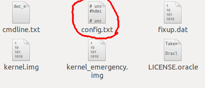

- Módulo: Fundamentos de hardware
- Título del trabajo Raspberry
- Componentes del grupo: Abel García García
- Curso Académico: 2013/2014
- Fecha de entrega: 16 de Junio de 2014


Cuando conecto el cable HDMI a la raspberry y al televisor me sale en la pantalla un error de señal y que comprueve que el cable este bien conectado
por eso busque en internet una posible solución y encontre una pagina que me dio una solución (enlace)
El problema estaba en un fichero de la targeta SD en el fichero config.txt
Archivo